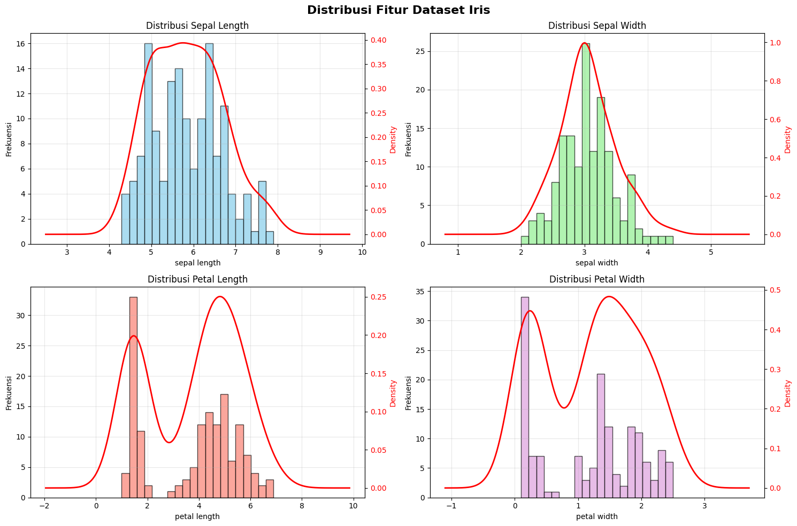
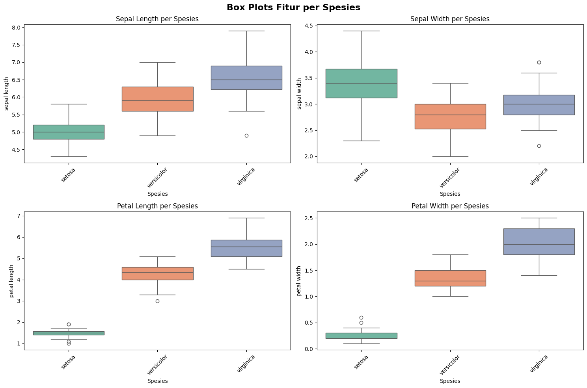
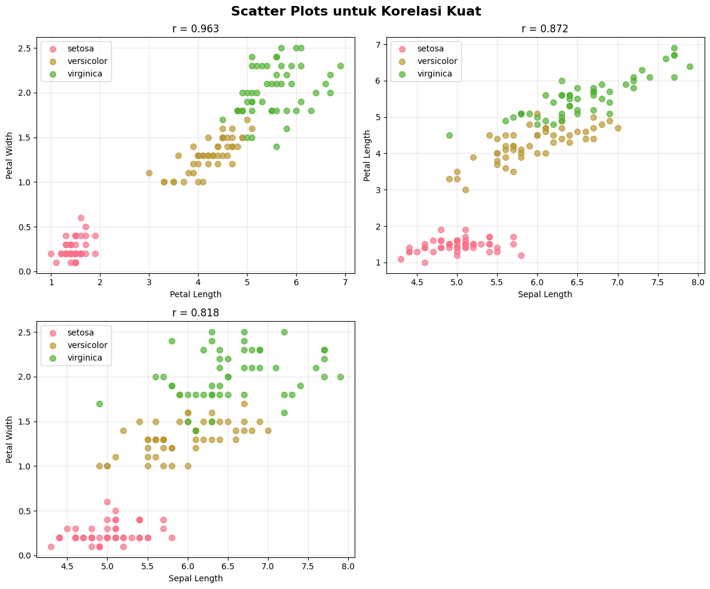

Data Understanding dengan PyCaret#
Notebook ini berisi analisis pemahaman data untuk dataset Iris klasik menggunakan PyCaret library yang akan digunakan untuk klasifikasi spesies bunga iris.
1. Import Library dan Load Dataset#
# Import library yang diperlukan
import pandas as pd
import numpy as np
import matplotlib.pyplot as plt
import seaborn as sns
import warnings
warnings.filterwarnings('ignore')
# Import PyCaret untuk EDA dan classification
from pycaret.datasets import get_data
from pycaret.classification import *
# Atur style untuk visualisasi
plt.style.use('default')
sns.set_palette("husl")
print("Library berhasil diimport")
try:
import pycaret
print(f"PyCaret version: {pycaret.__version__}")
except:
print("PyCaret berhasil diimport")
Library berhasil diimport
PyCaret version: 3.3.2
# Load dataset Iris dari file CSV atau PyCaret
try:
# Coba load dari file lokal
df = pd.read_csv('data_iris.csv', delimiter=';')
# Konversi kolom numerik yang menggunakan koma sebagai decimal separator
numeric_columns = ['sepal length', 'sepal width', 'petal length', 'petal width']
for col in numeric_columns:
if col in df.columns:
# Konversi koma ke titik untuk decimal
df[col] = df[col].astype(str).str.replace(',', '.').astype(float)
# Rename kolom untuk konsistensi dengan format sklearn
df = df.rename(columns={
'sepal length': 'sepal_length',
'sepal width': 'sepal_width',
'petal length': 'petal_length',
'petal width': 'petal_width',
'Class': 'species'
})
# Bersihkan nama spesies
df['species'] = df['species'].str.replace('Iris-', '')
# Drop kolom id jika ada
if 'id' in df.columns:
df = df.drop('id', axis=1)
print("Dataset Iris berhasil dimuat dari data_iris.csv")
except FileNotFoundError:
# Jika file tidak ditemukan, gunakan dataset Iris dari PyCaret
print("File lokal tidak ditemukan. Menggunakan dataset Iris dari PyCaret...")
df = get_data('iris')
print("Dataset Iris berhasil dimuat dari PyCaret")
print(f"Ukuran dataset: {df.shape[0]} baris, {df.shape[1]} kolom")
print(f"Kolom dataset: {list(df.columns)}")
df.head()
Dataset Iris berhasil dimuat dari data_iris.csv
Ukuran dataset: 150 baris, 5 kolom
Kolom dataset: ['species', 'sepal_length', 'sepal_width', 'petal_length', 'petal_width']
| species | sepal_length | sepal_width | petal_length | petal_width | |
|---|---|---|---|---|---|
| 0 | setosa | 5.1 | 3.5 | 1.4 | 0.2 |
| 1 | setosa | 4.9 | 3.0 | 1.4 | 0.2 |
| 2 | setosa | 4.7 | 3.2 | 1.3 | 0.2 |
| 3 | setosa | 4.6 | 3.1 | 1.5 | 0.2 |
| 4 | setosa | 5.0 | 3.6 | 1.4 | 0.2 |
2. Setup PyCaret Environment untuk EDA#
# Setup PyCaret environment untuk classification
# Ini akan mempersiapkan dataset untuk analisis
clf = setup(
data=df,
target='species',
session_id=123,
train_size=0.8,
verbose=False, # Mengurangi output verbose
profile=False # Menonaktifkan profiling otomatis
)
print("\n=== PYCARET SETUP BERHASIL ===")
print("Environment PyCaret telah dikonfigurasi untuk analisis klasifikasi")
=== PYCARET SETUP BERHASIL ===
Environment PyCaret telah dikonfigurasi untuk analisis klasifikasi
3. Exploratory Data Analysis (EDA) dengan PyCaret#
# Informasi dasar dataset
print("=== INFORMASI DATASET IRIS ===\n")
# Dataset info
print(f"[INFO] Ukuran Dataset: {df.shape[0]} baris x {df.shape[1]} kolom")
print(f"[INFO] Target Variable: species")
print(f"[INFO] Fitur: {df.shape[1] - 1} fitur numerik")
print(f"[INFO] Kelas: {df['species'].nunique()} kelas unik")
print(f"[INFO] Kelas tersedia: {', '.join(df['species'].unique())}")
print("\n=== STATISTIK DESKRIPTIF ===")
df.describe().round(3)
=== INFORMASI DATASET IRIS ===
[INFO] Ukuran Dataset: 150 baris x 5 kolom
[INFO] Target Variable: species
[INFO] Fitur: 4 fitur numerik
[INFO] Kelas: 3 kelas unik
[INFO] Kelas tersedia: setosa, versicolor, virginica
=== STATISTIK DESKRIPTIF ===
| sepal_length | sepal_width | petal_length | petal_width | |
|---|---|---|---|---|
| count | 150.000 | 150.000 | 150.000 | 150.000 |
| mean | 5.843 | 3.054 | 3.759 | 1.199 |
| std | 0.828 | 0.434 | 1.764 | 0.763 |
| min | 4.300 | 2.000 | 1.000 | 0.100 |
| 25% | 5.100 | 2.800 | 1.600 | 0.300 |
| 50% | 5.800 | 3.000 | 4.350 | 1.300 |
| 75% | 6.400 | 3.300 | 5.100 | 1.800 |
| max | 7.900 | 4.400 | 6.900 | 2.500 |
# Informasi tipe data dan missing values
print("=== INFORMASI TIPE DATA DAN KUALITAS DATA ===\n")
# Data types
print("[STRUKTUR] Tipe Data:")
for col in df.columns:
dtype = df[col].dtype
unique_count = df[col].nunique()
print(f" - {col}: {dtype} ({unique_count} nilai unik)")
# Missing values
print("\n[KUALITAS] Missing Values:")
missing_count = df.isnull().sum()
if missing_count.sum() == 0:
print(" [OK] Tidak ada missing values")
else:
for col, count in missing_count.items():
if count > 0:
percentage = (count / len(df)) * 100
print(f" - {col}: {count} ({percentage:.1f}%)")
# Duplicate check
duplicates = df.duplicated().sum()
print(f"\n[KUALITAS] Data Duplikat: {duplicates} baris")
if duplicates == 0:
print(" [OK] Tidak ada data duplikat")
=== INFORMASI TIPE DATA DAN KUALITAS DATA ===
[STRUKTUR] Tipe Data:
- species: object (3 nilai unik)
- sepal_length: float64 (35 nilai unik)
- sepal_width: float64 (23 nilai unik)
- petal_length: float64 (43 nilai unik)
- petal_width: float64 (22 nilai unik)
[KUALITAS] Missing Values:
[OK] Tidak ada missing values
[KUALITAS] Data Duplikat: 3 baris
# Analisis target variable
print("=== ANALISIS TARGET VARIABLE ===\n")
# Distribusi kelas
target_dist = df['species'].value_counts()
target_pct = df['species'].value_counts(normalize=True) * 100
print("[DISTRIBUSI] Distribusi Kelas:")
for species in target_dist.index:
count = target_dist[species]
percentage = target_pct[species]
print(f" - {species}: {count} sampel ({percentage:.1f}%)")
# Check class balance
if target_pct.std() < 5: # Standard deviation < 5%
print("\n[STATUS] Dataset seimbang (balanced)")
else:
print("\n[WARNING] Dataset tidak seimbang (imbalanced)")
# Visualisasi distribusi target
fig, (ax1, ax2) = plt.subplots(1, 2, figsize=(12, 5))
# Bar plot
target_dist.plot(kind='bar', ax=ax1, color=['#FF9999', '#66B2FF', '#99FF99'], alpha=0.8)
ax1.set_title('Distribusi Spesies Iris', fontweight='bold')
ax1.set_xlabel('Spesies')
ax1.set_ylabel('Jumlah Sampel')
ax1.tick_params(axis='x', rotation=45)
# Pie chart
target_dist.plot(kind='pie', ax=ax2, autopct='%1.1f%%',
colors=['#FF9999', '#66B2FF', '#99FF99'], startangle=90)
ax2.set_title('Proporsi Spesies Iris', fontweight='bold')
ax2.set_ylabel('')
plt.tight_layout()
plt.show()
=== ANALISIS TARGET VARIABLE ===
[DISTRIBUSI] Distribusi Kelas:
- setosa: 50 sampel (33.3%)
- versicolor: 50 sampel (33.3%)
- virginica: 50 sampel (33.3%)
[STATUS] Dataset seimbang (balanced)
4. Analisis Fitur dengan PyCaret#
# Analisis univariat untuk setiap fitur
print("=== ANALISIS UNIVARIAT FITUR ===\n")
numeric_features = [col for col in df.columns if col != 'species']
# Statistik deskriptif per fitur
for feature in numeric_features:
print(f"[ANALISIS] {feature.upper().replace('_', ' ')}:")
stats = df[feature].describe()
print(f" - Range: {stats['min']:.2f} - {stats['max']:.2f}")
print(f" - Mean ± Std: {stats['mean']:.2f} ± {stats['std']:.2f}")
print(f" - Median (Q2): {stats['50%']:.2f}")
print(f" - IQR: {stats['75%'] - stats['25%']:.2f}")
# Skewness and Kurtosis
skewness = df[feature].skew()
kurtosis = df[feature].kurtosis()
skew_desc = 'Right-skewed' if skewness > 0.5 else 'Left-skewed' if skewness < -0.5 else 'Symmetric'
print(f" - Skewness: {skewness:.3f} ({skew_desc})")
print(f" - Kurtosis: {kurtosis:.3f}")
print()
=== ANALISIS UNIVARIAT FITUR ===
[ANALISIS] SEPAL LENGTH:
- Range: 4.30 - 7.90
- Mean ± Std: 5.84 ± 0.83
- Median (Q2): 5.80
- IQR: 1.30
- Skewness: 0.315 (Symmetric)
- Kurtosis: -0.552
[ANALISIS] SEPAL WIDTH:
- Range: 2.00 - 4.40
- Mean ± Std: 3.05 ± 0.43
- Median (Q2): 3.00
- IQR: 0.50
- Skewness: 0.334 (Symmetric)
- Kurtosis: 0.291
[ANALISIS] PETAL LENGTH:
- Range: 1.00 - 6.90
- Mean ± Std: 3.76 ± 1.76
- Median (Q2): 4.35
- IQR: 3.50
- Skewness: -0.274 (Symmetric)
- Kurtosis: -1.402
[ANALISIS] PETAL WIDTH:
- Range: 0.10 - 2.50
- Mean ± Std: 1.20 ± 0.76
- Median (Q2): 1.30
- IQR: 1.50
- Skewness: -0.105 (Symmetric)
- Kurtosis: -1.340
# Visualisasi distribusi fitur
fig, axes = plt.subplots(2, 2, figsize=(15, 10))
fig.suptitle('Distribusi Fitur Dataset Iris', fontsize=16, fontweight='bold')
colors = ['skyblue', 'lightgreen', 'salmon', 'plum']
for i, (feature, color) in enumerate(zip(numeric_features, colors)):
row = i // 2
col = i % 2
# Histogram dengan KDE
df[feature].hist(bins=20, ax=axes[row, col], color=color, alpha=0.7, edgecolor='black')
# Tambahkan KDE
ax2 = axes[row, col].twinx()
df[feature].plot.kde(ax=ax2, color='red', linewidth=2)
ax2.set_ylabel('Density', color='red')
ax2.tick_params(axis='y', labelcolor='red')
axes[row, col].set_title(f'Distribusi {feature.replace("_", " ").title()}')
axes[row, col].set_xlabel(feature.replace('_', ' '))
axes[row, col].set_ylabel('Frekuensi')
axes[row, col].grid(True, alpha=0.3)
plt.tight_layout()
plt.show()

# Box plots untuk deteksi outliers dan perbandingan antar spesies
fig, axes = plt.subplots(2, 2, figsize=(15, 10))
fig.suptitle('Box Plots Fitur per Spesies', fontsize=16, fontweight='bold')
for i, feature in enumerate(numeric_features):
row = i // 2
col = i % 2
sns.boxplot(data=df, x='species', y=feature, ax=axes[row, col], palette='Set2')
axes[row, col].set_title(f'{feature.replace("_", " ").title()} per Spesies')
axes[row, col].set_xlabel('Spesies')
axes[row, col].set_ylabel(feature.replace('_', ' '))
axes[row, col].tick_params(axis='x', rotation=45)
plt.tight_layout()
plt.show()
# Deteksi outliers
print("=== DETEKSI OUTLIERS (IQR Method) ===\n")
for feature in numeric_features:
Q1 = df[feature].quantile(0.25)
Q3 = df[feature].quantile(0.75)
IQR = Q3 - Q1
lower_bound = Q1 - 1.5 * IQR
upper_bound = Q3 + 1.5 * IQR
outliers = df[(df[feature] < lower_bound) | (df[feature] > upper_bound)]
outlier_count = len(outliers)
outlier_percentage = (outlier_count / len(df)) * 100
print(f"[OUTLIER] {feature.replace('_', ' ').title()}:")
print(f" - Outliers: {outlier_count} ({outlier_percentage:.1f}%)")
if outlier_count > 0:
print(f" - Range outliers: {outliers[feature].min():.2f} - {outliers[feature].max():.2f}")
print()

=== DETEKSI OUTLIERS (IQR Method) ===
[OUTLIER] Sepal Length:
- Outliers: 0 (0.0%)
[OUTLIER] Sepal Width:
- Outliers: 4 (2.7%)
- Range outliers: 2.00 - 4.40
[OUTLIER] Petal Length:
- Outliers: 0 (0.0%)
[OUTLIER] Petal Width:
- Outliers: 0 (0.0%)
5. Analisis Korelasi dengan PyCaret#
# Matriks korelasi
correlation_matrix = df[numeric_features].corr()
print("=== MATRIKS KORELASI ===\n")
print(correlation_matrix.round(3))
# Visualisasi heatmap korelasi
plt.figure(figsize=(10, 8))
mask = np.triu(np.ones_like(correlation_matrix, dtype=bool))
sns.heatmap(correlation_matrix,
annot=True,
cmap='RdBu_r',
center=0,
square=True,
fmt='.3f',
cbar_kws={'shrink': 0.8},
mask=mask,
linewidths=0.5)
plt.title('Heatmap Korelasi Antar Fitur', fontsize=16, fontweight='bold', pad=20)
plt.tight_layout()
plt.show()
# Analisis korelasi kuat
print("\n=== ANALISIS KORELASI KUAT (|r| > 0.7) ===\n")
strong_correlations = []
for i in range(len(numeric_features)):
for j in range(i+1, len(numeric_features)):
corr_value = correlation_matrix.iloc[i, j]
if abs(corr_value) > 0.7:
strong_correlations.append({
'feature1': numeric_features[i],
'feature2': numeric_features[j],
'correlation': corr_value
})
if strong_correlations:
strong_correlations.sort(key=lambda x: abs(x['correlation']), reverse=True)
for idx, corr_info in enumerate(strong_correlations, 1):
corr_type = "Positif Kuat" if corr_info['correlation'] > 0 else "Negatif Kuat"
print(f"{idx}. {corr_info['feature1'].replace('_', ' ').title()} x {corr_info['feature2'].replace('_', ' ').title()}")
print(f" Korelasi: {corr_info['correlation']:.3f} ({corr_type})")
print()
else:
print("Tidak ada korelasi kuat yang ditemukan.")
=== MATRIKS KORELASI ===
sepal_length sepal_width petal_length petal_width
sepal_length 1.000 -0.109 0.872 0.818
sepal_width -0.109 1.000 -0.421 -0.357
petal_length 0.872 -0.421 1.000 0.963
petal_width 0.818 -0.357 0.963 1.000
=== ANALISIS KORELASI KUAT (|r| > 0.7) ===
1. Petal Length x Petal Width
Korelasi: 0.963 (Positif Kuat)
2. Sepal Length x Petal Length
Korelasi: 0.872 (Positif Kuat)
3. Sepal Length x Petal Width
Korelasi: 0.818 (Positif Kuat)
# Scatter plots untuk korelasi kuat
if strong_correlations:
n_plots = len(strong_correlations)
n_cols = min(2, n_plots)
n_rows = (n_plots + n_cols - 1) // n_cols
fig, axes = plt.subplots(n_rows, n_cols, figsize=(6*n_cols, 5*n_rows))
if n_plots == 1:
axes = [axes]
elif n_rows == 1:
axes = axes
else:
axes = axes.flatten()
fig.suptitle('Scatter Plots untuk Korelasi Kuat', fontsize=16, fontweight='bold')
for idx, corr_info in enumerate(strong_correlations):
if idx < len(axes):
for species in df['species'].unique():
species_data = df[df['species'] == species]
axes[idx].scatter(species_data[corr_info['feature1']],
species_data[corr_info['feature2']],
label=species, alpha=0.7, s=50)
axes[idx].set_xlabel(corr_info['feature1'].replace('_', ' ').title())
axes[idx].set_ylabel(corr_info['feature2'].replace('_', ' ').title())
axes[idx].set_title(f"r = {corr_info['correlation']:.3f}")
axes[idx].legend()
axes[idx].grid(True, alpha=0.3)
# Hide empty subplots
for idx in range(len(strong_correlations), len(axes)):
axes[idx].set_visible(False)
plt.tight_layout()
plt.show()

6. Analisis Multivariat dengan PyCaret#
# Pair plot untuk analisis multivariat
print("=== PAIR PLOT ANALYSIS ===\n")
print("Membuat pair plot untuk semua kombinasi fitur...")
plt.figure(figsize=(12, 10))
pair_plot = sns.pairplot(df, hue='species', palette='Set1',
plot_kws={'alpha': 0.7, 's': 50},
diag_kind='kde')
pair_plot.fig.suptitle('Pair Plot Dataset Iris', y=1.02, fontsize=16, fontweight='bold')
plt.show()
print("[SUCCESS] Pair plot menunjukkan hubungan antar fitur dan separabilitas antar kelas")
=== PAIR PLOT ANALYSIS ===
Membuat pair plot untuk semua kombinasi fitur...
<Figure size 1200x1000 with 0 Axes>
[SUCCESS] Pair plot menunjukkan hubungan antar fitur dan separabilitas antar kelas
# Analisis pentingnya fitur menggunakan PyCaret
print("=== ANALISIS PENTINGNYA FITUR ===\n")
try:
# Buat model cepat untuk analisis feature importance
rf_model = create_model('rf', verbose=False)
# Plot feature importance
plot_model(rf_model, plot='feature', save=False)
plt.title('Feature Importance (Random Forest)', fontweight='bold', pad=20)
plt.tight_layout()
plt.show()
print("[SUCCESS] Feature importance berhasil dianalisis menggunakan Random Forest")
except Exception as e:
print(f"[WARNING] Tidak dapat membuat plot feature importance: {e}")
print("Menggunakan analisis alternatif...")
# Analisis varians antar kelas sebagai alternatif
feature_variance = {}
for feature in numeric_features:
# Hitung varians antar kelas
class_means = df.groupby('species')[feature].mean()
overall_mean = df[feature].mean()
between_class_var = sum([(mean - overall_mean)**2 for mean in class_means])
feature_variance[feature] = between_class_var
# Sort by variance
sorted_features = sorted(feature_variance.items(), key=lambda x: x[1], reverse=True)
print("[RANKING] Ranking Fitur berdasarkan Varians Antar Kelas:")
for idx, (feature, variance) in enumerate(sorted_features, 1):
print(f"{idx}. {feature.replace('_', ' ').title()}: {variance:.3f}")
=== ANALISIS PENTINGNYA FITUR ===
[SUCCESS] Feature importance berhasil dianalisis menggunakan Random Forest
7. Analisis per Kelas/Spesies#
# Statistik deskriptif per spesies
print("=== STATISTIK DESKRIPTIF PER SPESIES ===\n")
species_labels = {'setosa': 'SETOSA',
'versicolor': 'VERSICOLOR',
'virginica': 'VIRGINICA'}
for species in df['species'].unique():
print(f"[SPESIES] {species_labels.get(species, species.upper())}")
print("=" * 50)
species_data = df[df['species'] == species][numeric_features]
# Statistik deskriptif
stats = species_data.describe().round(3)
print(stats)
# Karakteristik unik spesies ini
print("\n[KARAKTERISTIK] Karakteristik Khas:")
for feature in numeric_features:
mean_val = species_data[feature].mean()
overall_mean = df[feature].mean()
diff_pct = ((mean_val - overall_mean) / overall_mean) * 100
if abs(diff_pct) > 10: # Jika berbeda > 10% dari rata-rata keseluruhan
direction = "lebih tinggi" if diff_pct > 0 else "lebih rendah"
print(f" - {feature.replace('_', ' ').title()}: {diff_pct:+.1f}% {direction} dari rata-rata")
print("\n" + "="*70 + "\n")
=== STATISTIK DESKRIPTIF PER SPESIES ===
[SPESIES] SETOSA
==================================================
sepal_length sepal_width petal_length petal_width
count 50.000 50.000 50.000 50.000
mean 5.006 3.418 1.464 0.244
std 0.352 0.381 0.174 0.107
min 4.300 2.300 1.000 0.100
25% 4.800 3.125 1.400 0.200
50% 5.000 3.400 1.500 0.200
75% 5.200 3.675 1.575 0.300
max 5.800 4.400 1.900 0.600
[KARAKTERISTIK] Karakteristik Khas:
- Sepal Length: -14.3% lebih rendah dari rata-rata
- Sepal Width: +11.9% lebih tinggi dari rata-rata
- Petal Length: -61.1% lebih rendah dari rata-rata
- Petal Width: -79.6% lebih rendah dari rata-rata
======================================================================
[SPESIES] VERSICOLOR
==================================================
sepal_length sepal_width petal_length petal_width
count 50.000 50.000 50.00 50.000
mean 5.936 2.770 4.26 1.326
std 0.516 0.314 0.47 0.198
min 4.900 2.000 3.00 1.000
25% 5.600 2.525 4.00 1.200
50% 5.900 2.800 4.35 1.300
75% 6.300 3.000 4.60 1.500
max 7.000 3.400 5.10 1.800
[KARAKTERISTIK] Karakteristik Khas:
- Petal Length: +13.3% lebih tinggi dari rata-rata
- Petal Width: +10.6% lebih tinggi dari rata-rata
======================================================================
[SPESIES] VIRGINICA
==================================================
sepal_length sepal_width petal_length petal_width
count 50.000 50.000 50.000 50.000
mean 6.588 2.974 5.552 2.026
std 0.636 0.322 0.552 0.275
min 4.900 2.200 4.500 1.400
25% 6.225 2.800 5.100 1.800
50% 6.500 3.000 5.550 2.000
75% 6.900 3.175 5.875 2.300
max 7.900 3.800 6.900 2.500
[KARAKTERISTIK] Karakteristik Khas:
- Sepal Length: +12.7% lebih tinggi dari rata-rata
- Petal Length: +47.7% lebih tinggi dari rata-rata
- Petal Width: +69.0% lebih tinggi dari rata-rata
======================================================================
# Perbandingan rata-rata antar spesies
print("=== PERBANDINGAN RATA-RATA ANTAR SPESIES ===\n")
species_means = df.groupby('species')[numeric_features].mean().round(3)
print("[PERBANDINGAN] Rata-rata Fitur per Spesies:")
print(species_means)
# Visualisasi perbandingan
fig, axes = plt.subplots(2, 2, figsize=(15, 10))
fig.suptitle('Perbandingan Rata-rata Fitur Antar Spesies', fontsize=16, fontweight='bold')
for i, feature in enumerate(numeric_features):
row = i // 2
col = i % 2
species_means[feature].plot(kind='bar', ax=axes[row, col],
color=['#FF9999', '#66B2FF', '#99FF99'],
alpha=0.8)
axes[row, col].set_title(f'{feature.replace("_", " ").title()}')
axes[row, col].set_ylabel('Rata-rata')
axes[row, col].tick_params(axis='x', rotation=45)
axes[row, col].grid(True, alpha=0.3)
plt.tight_layout()
plt.show()
=== PERBANDINGAN RATA-RATA ANTAR SPESIES ===
[PERBANDINGAN] Rata-rata Fitur per Spesies:
sepal_length sepal_width petal_length petal_width
species
setosa 5.006 3.418 1.464 0.244
versicolor 5.936 2.770 4.260 1.326
virginica 6.588 2.974 5.552 2.026
8. Ringkasan Insights dan Rekomendasi#
print("[SUMMARY]" + "="*70)
print(" RINGKASAN DATA UNDERSTANDING")
print("="*72 + "[SUMMARY]\n")
# Dataset Overview
print("[OVERVIEW] DATASET:")
print(f" - Ukuran: {df.shape[0]} sampel x {df.shape[1]} fitur")
print(f" - Target: {df['species'].nunique()} kelas (klasifikasi)")
is_clean = df.isnull().sum().sum() == 0 and df.duplicated().sum() == 0
print(f" - Kualitas: {'[OK] Bersih' if is_clean else '[WARNING] Perlu cleaning'}")
is_balanced = df['species'].value_counts().std() < 5
print(f" - Balance: {'[OK] Seimbang' if is_balanced else '[WARNING] Tidak seimbang'}")
# Feature Characteristics
print("\n[FITUR] KARAKTERISTIK FITUR:")
for feature in numeric_features:
skewness = df[feature].skew()
if abs(skewness) < 0.5:
skew_desc = 'simetris'
elif skewness > 0:
skew_desc = 'right-skewed'
else:
skew_desc = 'left-skewed'
print(f" - {feature.replace('_', ' ').title()}: {skew_desc}, range {df[feature].min():.1f}-{df[feature].max():.1f}")
# Correlation Insights
print("\n[KORELASI] INSIGHTS KORELASI:")
if strong_correlations:
for corr_info in strong_correlations:
print(f" - {corr_info['feature1'].replace('_', ' ').title()} dan {corr_info['feature2'].replace('_', ' ').title()}: korelasi kuat ({corr_info['correlation']:.3f})")
else:
print(" - Tidak ada korelasi yang sangat kuat antar fitur")
# Class Separability
print("\n[SEPARABILITAS] SEPARABILITAS KELAS:")
separability_score = 0
for feature in numeric_features:
species_means = df.groupby('species')[feature].mean()
species_std = df.groupby('species')[feature].std().mean()
mean_diff = species_means.max() - species_means.min()
if mean_diff > 2 * species_std:
separability_score += 1
print(f" - {feature.replace('_', ' ').title()}: [OK] Baik untuk separasi kelas")
if separability_score >= 3:
print(" [EXCELLENT] Dataset memiliki separabilitas kelas yang excellent!")
elif separability_score >= 2:
print(" [GOOD] Dataset memiliki separabilitas kelas yang baik")
else:
print(" [WARNING] Separabilitas kelas mungkin challenging")
# Recommendations
print("\n[REKOMENDASI] REKOMENDASI UNTUK MODELING:")
print(" - [OK] Dataset siap untuk machine learning")
print(" - [OK] Tidak perlu preprocessing kompleks")
print(" - [CONSIDER] Pertimbangkan feature scaling untuk beberapa algoritma")
print(" - [INFO] Semua algoritma klasifikasi akan bekerja dengan baik")
print(" - [PREDICT] Expected accuracy: Tinggi (>90%) karena data berkualitas")
if strong_correlations:
print(" - [WARNING] Pertimbangkan feature selection jika ada overfitting")
print("\n" + "="*72)
print("[COMPLETE] Data Understanding dengan PyCaret selesai!")
print("="*72)
[SUMMARY]======================================================================
RINGKASAN DATA UNDERSTANDING
========================================================================[SUMMARY]
[OVERVIEW] DATASET:
- Ukuran: 150 sampel x 5 fitur
- Target: 3 kelas (klasifikasi)
- Kualitas: [WARNING] Perlu cleaning
- Balance: [OK] Seimbang
[FITUR] KARAKTERISTIK FITUR:
- Sepal Length: simetris, range 4.3-7.9
- Sepal Width: simetris, range 2.0-4.4
- Petal Length: simetris, range 1.0-6.9
- Petal Width: simetris, range 0.1-2.5
[KORELASI] INSIGHTS KORELASI:
- Petal Length dan Petal Width: korelasi kuat (0.963)
- Sepal Length dan Petal Length: korelasi kuat (0.872)
- Sepal Length dan Petal Width: korelasi kuat (0.818)
[SEPARABILITAS] SEPARABILITAS KELAS:
- Sepal Length: [OK] Baik untuk separasi kelas
- Petal Length: [OK] Baik untuk separasi kelas
- Petal Width: [OK] Baik untuk separasi kelas
[EXCELLENT] Dataset memiliki separabilitas kelas yang excellent!
[REKOMENDASI] REKOMENDASI UNTUK MODELING:
- [OK] Dataset siap untuk machine learning
- [OK] Tidak perlu preprocessing kompleks
- [CONSIDER] Pertimbangkan feature scaling untuk beberapa algoritma
- [INFO] Semua algoritma klasifikasi akan bekerja dengan baik
- [PREDICT] Expected accuracy: Tinggi (>90%) karena data berkualitas
- [WARNING] Pertimbangkan feature selection jika ada overfitting
========================================================================
[COMPLETE] Data Understanding dengan PyCaret selesai!
========================================================================